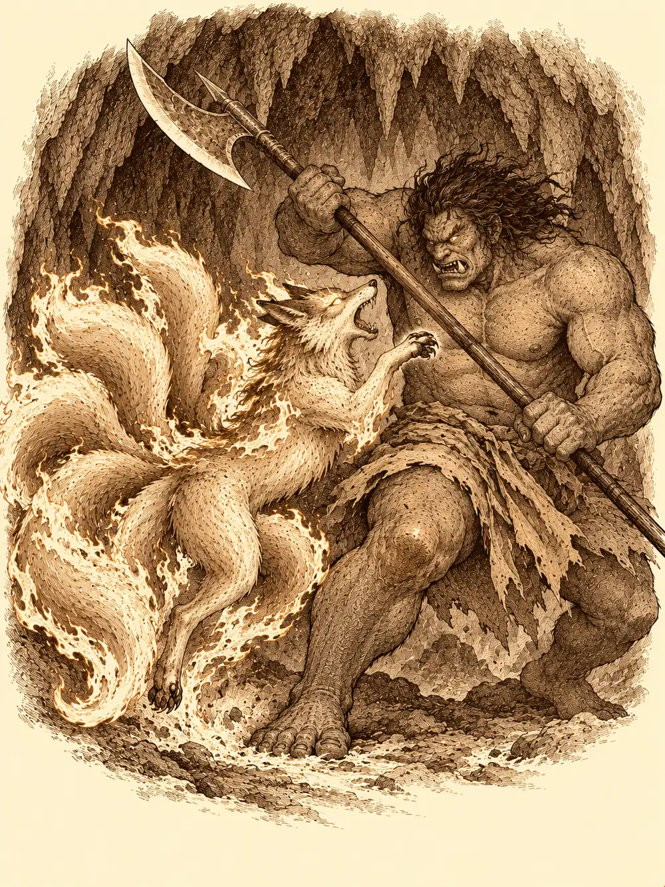

Capítulo 33
Huérfano de fuego
Libro III · La boda del shogun
Erk hizo todo el camino de vuelta desde Sho volando por encima del carro nuevo, sin bajar ni para comer. En la boda no había conseguido acercarse a Hayate; en el viaje, sí. Le había preguntado de dónde era, si conocía algún nido de los suyos por aquella tierra, algo, cualquier cosa. Hayate había sido amable, pero reservado, y se había guardado lo que sabía o lo que no quería contar. Erk volaba alto, sola, con la cabeza gacha entre los hombros.
Abajo, Maroxi llevaba las riendas de los caballos que el shogun les había regalado. Traía en el carro carne de serpiente para Kitaro, por si sabía cocinarla, y una cabellera que todavía se movía sola, de regalo para el enano. Ikari dormía la mona en la parte de atrás, abrazado a su botella de sake inagotable, sin acordarse de casi nada de la fiesta. Su mochila iba llena de los ingredientes que le había encargado el alquimista de Ukio, y su bolsa, bastante más ligera.
En la base, todo seguía más o menos igual. Los monos, el bakeneko enroscado, el bebé que lloraba de vez en cuando. Solo una cosa había cambiado: Lor Miau ya no dormía sobre el piano. Lo encontraron en la despensa, sobre un montón de paja, lejos de los monos, del bebé y del gato gigante. Parecía más tranquilo.
Sobre la mesa de reuniones, entre papeles y botellas vacías de Mosto, había una nota de Sirth. Se había vuelto a marchar a Sho. Había comprado una caja grande para guardar el material de todos; cada uno podía coger una sola cosa para una misión, siempre que la devolviera al terminar. Y una última línea, subrayada: que cuidaran de la niña.
"Me halaga esta confianza", dijo Ikari.
Maroxi se fijó en que la nota parecía escrita por dos personas, una que se fiaba de ellos y otra que no tanto. Luego se acercó a la cuna, comprobó que el bebé era un niño, y concluyó que la niña a la que se refería la nota tenía que ser Shizuka. Se transformó en ella y empezó a dar brincos alrededor de Erk.
"¡Llévame volando! ¡Ahora tienes que cuidarme!".
"No, gracias".
Abrieron la caja. Ikari eligió la capa de los dodomeki, la que volvía borroso a quien la llevaba. Maroxi, la del trol, que soltaba un frío mordiente alrededor, porque le pegaba más para bailar. Erk se quedó con la bolsa de polvos de hada, aunque le advirtieron que a veces el polvo se volvía contra quien lo lanzaba y lo convertía en una oca gigante, y una oca muy tonta.
"¿Buscáis a la niña?", dijo una voz.
El perro de la casa, el que siempre andaba detrás de Shizuka, se puso a dos patas. Las delanteras se le alargaron hasta convertirse en manos, el cuerpo se le estiró, y delante de ellos quedó un ser alto con rasgos de perro y una mirada demasiado inteligente.
"Muchos yokai tenemos la capacidad de cambiar de forma", le dijo a Maroxi, que lo miraba fascinado. Movió los dedos y le saltaron chispas, como las que Maroxi solía hacer. "Me encanta la gente que sabe magia. Y el pequeño también sabe".
Les contó que los cazadores lo habían defendido de unos shinobi en el camino a la capital, y que prefería la forma de perro, porque así podía jugar con la niña. Le preguntaron su nombre.
"Inugami. Aunque en realidad ese es el nombre de mi especie. Nombre propio no tengo. Seguro que Shizuka me bautiza pronto".
A la niña la había visto salir hacía una hora o así. Seguro que andaba por el pueblo haciendo el tonto. Le ofrecieron acompañarlos. Prefirió quedarse; estaba cansado.
En la calle, una puerta entornada les siseó.
"Cazadores. Venid".
Era el shinobi al que los veteranos habían perdonado la vida. Les explicó, después de asegurarse de que no venía con ellos el funcionario, cómo funcionaba su negocio. Tenía dos hombres trabajando para los cazadores; si querían más, cada uno costaba ciento cincuenta monedas. Mandaron a los dos. Uno volvió con un estuche de herramientas de pintor; el otro, con algo de dinero. Maroxi pagó por un tercero y lo envió también.
El shinobi volvió con la cara descompuesta.
"Lo siento mucho. El último que contratasteis era un traidor. Ha robado cincuenta monedas de las arcas a cada uno y se ha fugado".
En la tienda de pescado, Maroxi se transformó en el enano para cobrar la parte de Haru, con el mismo descaro que el original. En el burdel, la madame lo recibió con un kimono que se le resbalaba del hombro.
"Hola, guapetón".
Maroxi aprovechó para preguntarle por su pasado. Ella se lo contó sin rodeos: antes algunas de sus chicas, de las más histéricas, mataban a algún cliente de vez en cuando; los cazadores fueron a ver qué pasaba, hubo una buena pelea, y antes de matarse entre todos hicieron un trato. Ellas dejaban de matar y los cazadores las protegían. Ahora comían lo que encontraban en las cloacas, donde los humanos tiraban de todo.
"Me pareció ver en la capital a algunas chicas como las tuyas", dijo Maroxi.
"¿Mis chicas? Hace tiempo que no van a Sho". Le dio una calada al cigarro. "No todas las nure-onna trabajan para mí, guapo. Hay seres como nosotras en todas partes".
A Shizuka la había visto correr hacia el bosque. Decía que iba a cazar yokai.
Erk, por su parte, iba preguntando a quien encontraba si había oído alguna vez una leyenda sobre un huevo robado de los de su especie. Nadie sabía nada.
Erk, que era quien mejor rastreaba, ese día no daba con nada. Fueron Maroxi e Ikari los que encontraron las huellas: pisadas torpes, ramas rotas, un botón de la ropa de Shizuka tirado en el suelo. Eran recientes. Las siguieron entre la niebla del bosque hasta unos matorrales cerca del río, donde se perdían. Junto a la orilla, agachada de espaldas, había una figura de tamaño adulto recogiendo algo.
Maroxi se volvió invisible y se acercó. Era una mujer que cogía plantas, hongos y flores y los metía en una bolsa que se agrandaba al abrirla y se encogía hasta caber en el cinto.
"¿Quién eres?", dijo Maroxi, sin dejarse ver.
La mujer pegó un salto. Miró a su alrededor, vio la hierba aplastada delante de ella y frunció el ceño.
"Hay alguien invisible por aquí. Podrías ser un poco más educado y presentarte, que en este bosque te puede atacar cualquier cosa".
Maroxi se hizo visible. Y, para no parecer un pervertido que asusta a mujeres en el bosque, cambió de cuerpo y se convirtió en una mujer de la capital con un kimono elegante. Fue un error. A la desconocida se le iluminaron los ojos.
"¡Puedes cambiar de forma!".

Se le echó encima. Le tocaba la cara, le abría la boca, le tiraba del pelo, le examinaba las orejas. Maroxi, para asustarla, se convirtió en el leonino de la taberna. Ella se le colgó de la cintura y le abrió las fauces para mirar dentro.
"¡Fascinante!".
Entre todos acabaron atándola con una cuerda, más que nada para poder hablar. De entre los matorrales salió Shizuka, sacudiéndose las hojas.
"Yo estaba aquí escondida esperando a cazar yokai, y me he encontrado a esta señora".
No estaba secuestrada. Solo se había escapado.
La mujer, todavía atada, se presentó. Se llamaba Asami. Era la especialista en utensilios mágicos de la capital y volvía de Hakara. Era justo la especialista de la que les habían hablado en Sho. Maroxi le enseñó uno de los frascos.
"Sangre demoníaca", dijo Asami, en cuanto la olió. Y quiso saber de dónde la sacaban, y si solían conseguir cosas así a menudo. Dos o tres veces por semana, le dijeron. "Entonces os propongo algo. Me monto una tienda pequeña en Ukio y nos ayudamos mutuamente".
La desataron. La bolsa que cambiaba de tamaño era un invento suyo, dijo con orgullo; cuando se instalara, podría hacerles alguna.
Erk se había subido a las copas de los árboles. Entre el mar de niebla vio un destello de fuego que se encendía en un punto y se apagaba para encenderse más allá, y oyó chillidos de zorro, como si algo huyera y algo lo persiguiera.
Asami prefirió seguir hacia Ukio.
"Yo no sé luchar. Os espero allí. ¡Traedme ingredientes!".
Maroxi aprovechó para recoger junto al río algunas de las plantas que le había visto coger, ahora que sabía cuáles eran. Ikari le fabricó a Shizuka un escudo pequeño, provisional, que no aguantaría muchos golpes, y la niña le dio unas palmaditas en la cabeza para agradecérselo. Lo sensato habría sido llevarla a casa. Shizuka, subida a la espalda de Erk, no pensaba consentirlo.
"Maroxi es un cobarde. Maroxi tiene miedo".
Maroxi se convirtió en Sirth y le advirtió con su voz que, si le pasaba algo, luego él la remataría. La niña ni se inmutó.
"Aunque te transformes en Sirth, no eres como Sirth".
Siguieron el rastro: ramas chamuscadas y pisadas de zorro que dejaban en el suelo marcas negras, como si cada una fuera una pequeña brasa. El rastro llevaba a una cueva baja. Dentro, la piedra estaba ennegrecida en las paredes, como si algo con un calor tremendo se hubiera apoyado en ella, y había pisadas de zorros grandes y pequeños. Erk oyó cuatro voces: tres más o menos humanas y otra grave, gutural.
Se asomó. Al fondo ardía un muro de fuego, y a través de él se distinguía una figura enorme con el pecho descubierto y una alabarda larga. Erk intentó retroceder sin ruido y no lo consiguió.
"Hay alguien ahí".
Erk ululó como un pájaro, por si colaba. No coló.
Un oni enorme peleaba contra un zorro de fuego, un kitsune adulto de varias colas, y tres hombres enmascarados apoyaban al oni desde atrás. Uno de ellos empezó a recitar y el oni se movió de pronto mucho más rápido.
"¡Son los del demonio malo!", gritó Shizuka. "¡Los del Mochatemaru! ¡Me lo enseñó Sirth!".
A Ikari se le encendieron los ojos de rabia.
Maroxi entró bailando y lanzó una bola de fuego sobre los tres enmascarados. Ikari conjuró de la nada un perro hecho de sombra que se lanzó al cuello del oni y lo hizo caer de espaldas. Erk, desde lo alto, le clavó dos flechas al hombre que mantenía la velocidad del oni y lo mató; el demonio volvió a moverse como antes. Shizuka, imitando la voz ronca de Sirth, gritó algo sobre las manos de la oscuridad que salían del inframundo para matar. No salió ninguna mano.
"Jo. Ha fallado".
Uno de los cultistas intentó lanzar un rayo, y Maroxi se lo deshizo en las manos antes de que saliera. Luego le dio un tajo que lo mató, y le arrojó una daga al oni. El kitsune seguía luchando, atacando al demonio con mordiscos y zarpazos.
En mitad de la pelea, el suelo tembló, y de un resquicio de la roca asomó una cabeza envuelta en telas. Alguien bajito, tapado de arriba abajo con ropas y capas.
"¡Bienvenidos! ¡Tengo una gran selección de productos a la venta!".
Nadie le contestó.
Ikari cruzó el muro de fuego. Las llamas le quemaron la ropa y el pelo, y salió por el otro lado humeando, con el anillo de sombras girando en el dedo, y lanzó una explosión de fuego contra el oni. El demonio se tambaleó, envuelto en llamas.
"Malditos", dijo.
Y antes de caer, con su último movimiento, hundió la alabarda en el kitsune y lo atravesó de lado a lado.
El zorro adulto había dejado de arder. Las llamas que lo envolvían se habían apagado, como si se hubieran ido con él.
En un rincón, temblando, había un cachorro. Se apretaba contra la pared y gemía. Erk se acercó despacio, sacó del bolsillo los bichos que le habían sobrado de la comida y se los ofreció en la palma. El cachorro dudó, los olió, se acercó, y al rato se dejó acariciar. Erk lo tomó en brazos.
Maroxi se arrodilló junto al zorro muerto. Le recordaba a una mascota que había tenido de niño, antes de que destruyeran su pueblo.
"Me lo llevo al templo. Allí hay quien sabe curar e incluso devolver la vida. Quizá puedan hacer algo".
Lo cogió en brazos, ahora que ya no quemaba, y echó a andar hacia la salida con prisa.
El vendedor de las telas, mientras tanto, había desnudado a los cultistas y amontonaba sus cosas en un carromato. Al abrirse la capa para mostrar su mercancía, dejó ver que debajo tenía cuatro patas más. Ikari se le acercó.
"¿Llevaban algún papel encima?".
"Tienes buen ojo".
El vendedor desplegó una hoja doblada en cuatro. Era un mapa de Kuroto, con cuatro marcas: una al norte, una al sur, una al este y otra al oeste. Lo volvió a doblar y se lo guardó.
"Eso te puede salir caro".
"Te he dejado llevarte nuestro botín", dijo Ikari. "Somos tres contra uno".
"Siempre puedo destruir este papel. Y aunque yo muera, tú también lo perderás".
Ikari lo miró con los ojos pesados de borracho, sin parpadear. El vendedor le propuso hablarlo con calma; él sabía dónde se podía sacar dinero. Ikari le dijo que primero cumpliera su palabra. Ninguno de los dos cedió.
Volvieron así hacia Ukio: Maroxi delante, con el zorro muerto en brazos; Ikari detrás, discutiendo con un vendedor de demasiadas patas que no soltaba el mapa; y por encima de los árboles, Erk, con Shizuka agarrada a la espalda y un cachorro de kitsune en el regazo. A medio vuelo, el cachorro arrugó el hocico y estornudó, y le salió por la nariz una llamarada que iluminó la niebla.
"Quieto", le susurró Erk, acariciándolo. "Que no quiero acabar como un pollo asado".